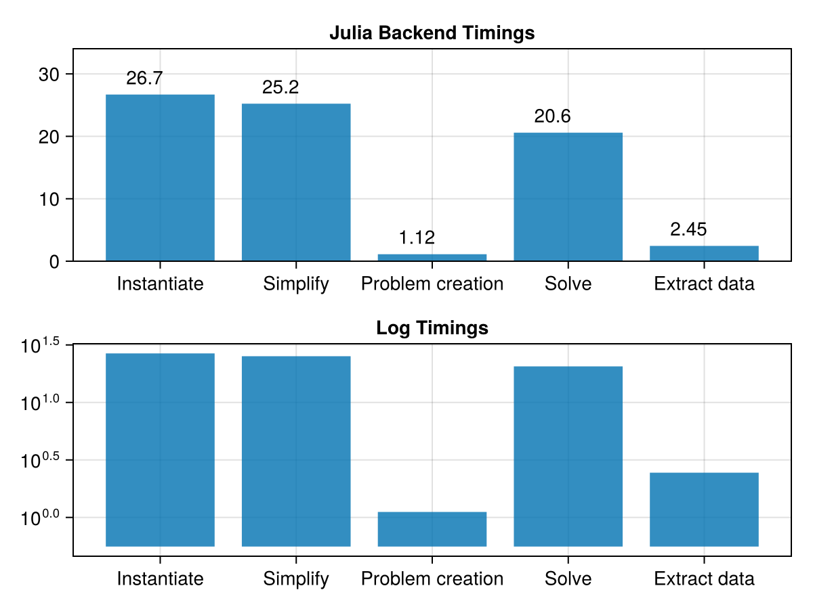
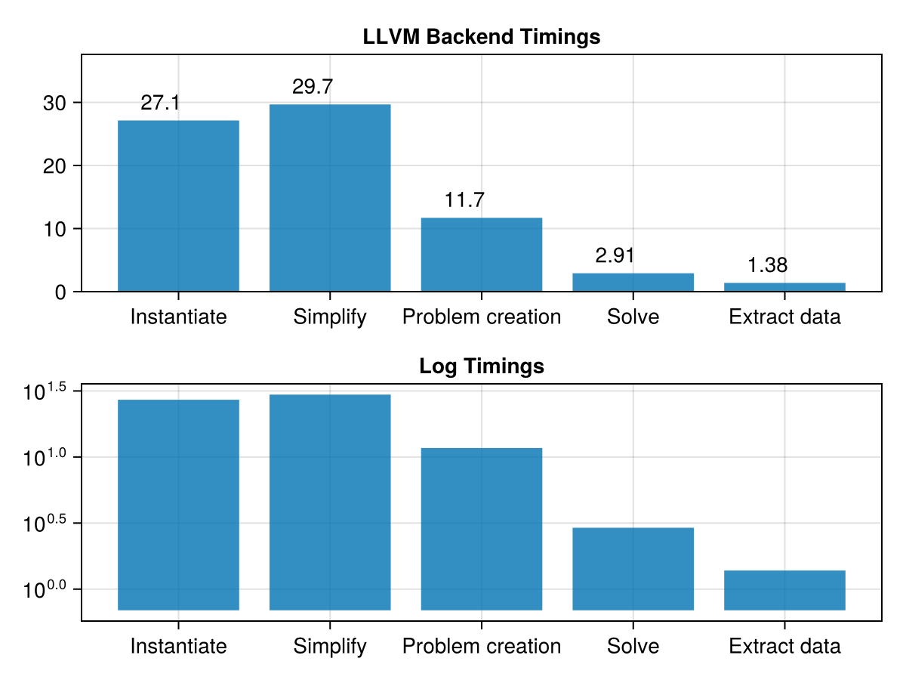
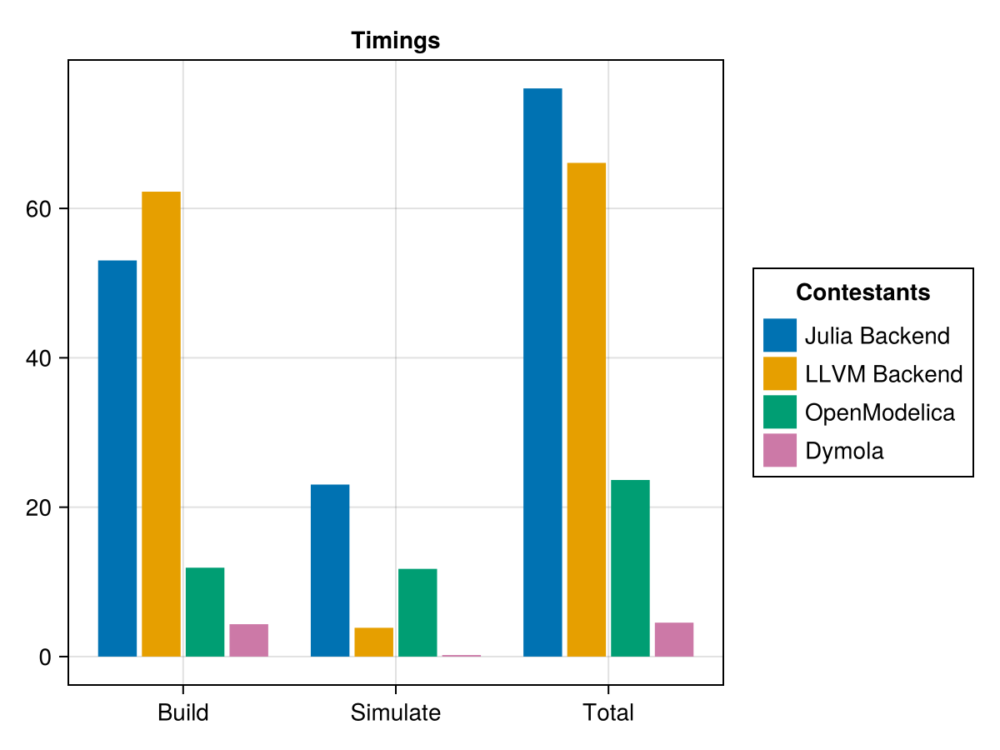

Multibody Robot, compilation and simulation performance
This is a Multibody.jl model of a 6-axis industrial robot with 6 revolute joints. The first three joints are modeled as flexible. The robot is tracking a smooth, predefined reference trajectory.
cd(@__DIR__)
using Pkg
Pkg.activate(".")
using ModelingToolkit
using Multibody
using Multibody: Robot6DOF
using JuliaSimCompiler
using OrdinaryDiffEq
using CairoMakie
using PrintfSetup
time_instantiate = @elapsed @named robot = Robot6DOF()
robot = complete(robot)
time_simplify = @elapsed ssys = structural_simplify(IRSystem(robot))
const C = JuliaSimCompiler.CTarget();
const LLVM = JuliaSimCompiler.llvm.LLVMTarget();
labels = ["Instantiate", "Simplify", "Problem creation", "Solve", "Extract data"]
const u0 = [
robot.mechanics.r1.phi => deg2rad(-60)
robot.mechanics.r2.phi => deg2rad(20)
robot.mechanics.r3.phi => deg2rad(90)
robot.mechanics.r4.phi => deg2rad(0)
robot.mechanics.r5.phi => deg2rad(-110)
robot.mechanics.r6.phi => deg2rad(0)
robot.axis1.motor.Jmotor.phi => deg2rad(-60) * (-105)
robot.axis2.motor.Jmotor.phi => deg2rad(20) * (210)
robot.axis3.motor.Jmotor.phi => deg2rad(90) * (60)
]
const tspan = (0.0, 4.0)(0.0, 4.0)Backend Benchmark Definition
function julia_multibody_timings(ssys, target)
time_prob = @elapsed prob = if target === JuliaSimCompiler.JuliaTarget()
ODEProblem(ssys, u0, tspan)
else
ODEProblem(ssys, target, u0, tspan)
end
time_solve = @elapsed sol = solve(prob, Rodas5P(autodiff=false)); # With autodiff=true this takes over 150 seconds
tv = 0:0.01:4
time_extract_data = @elapsed data = sol(tv, idxs=[
robot.pathPlanning.controlBus.axisControlBus1.angle
robot.pathPlanning.controlBus.axisControlBus2.angle
robot.pathPlanning.controlBus.axisControlBus3.angle
robot.pathPlanning.controlBus.axisControlBus4.angle
robot.pathPlanning.controlBus.axisControlBus5.angle
robot.pathPlanning.controlBus.axisControlBus6.angle
robot.mechanics.r1.phi
robot.mechanics.r2.phi
robot.mechanics.r3.phi
robot.mechanics.r4.phi
robot.mechanics.r5.phi
robot.mechanics.r6.phi
robot.axis1.controller.feedback1.output.u
robot.axis2.controller.feedback1.output.u
robot.axis3.controller.feedback1.output.u
robot.axis4.controller.feedback1.output.u
robot.axis5.controller.feedback1.output.u
robot.axis6.controller.feedback1.output.u
]);
timings = [time_instantiate, time_simplify, time_prob, time_solve, time_extract_data]
endjulia_multibody_timings (generic function with 1 method)julia_timings = julia_multibody_timings(ssys, JuliaSimCompiler.JuliaTarget())
f = Figure()
xs = 1:length(labels)
points = Makie.Point.(xs .- 0.25, julia_timings .+ 1)
anns = [@sprintf("%3.3g", t) for t in julia_timings]
barplot(f[1,1], julia_timings, axis=(; title="Julia Backend Timings", xticks = (xs, labels), limits = (nothing, (0, maximum(julia_timings)*1.2 + 2))))
annotations!(f[1,1], anns, points)
barplot(f[2,1], julia_timings, axis=(; title="Log Timings", xticks = (xs, labels), yscale=log10))
f
llvm_timings = julia_multibody_timings(ssys, LLVM)
f = Figure()
xs = 1:length(labels)
points = Makie.Point.(xs .- 0.25, llvm_timings .+ 1)
anns = [@sprintf("%3.3g", t) for t in llvm_timings]
barplot(f[1,1], llvm_timings, axis=(; title="LLVM Backend Timings", xticks = (xs, labels), limits = (nothing, (0, maximum(llvm_timings)*1.2 + 2))))
annotations!(f[1,1], anns, points)
barplot(f[2,1], llvm_timings, axis=(; title="Log Timings", xticks = (xs, labels), yscale=log10))
f
c_timings = julia_multibody_timings(ssys, C)
f = Figure()
xs = 1:length(labels)
points = Makie.Point.(xs .- 0.25, c_timings .+ 1)
anns = [@sprintf("%3.3g", t) for t in c_timings]
barplot(f[1,1], c_timings, axis=(; title="C Backend Timings", xticks = (xs, labels), limits = (nothing, (0, maximum(c_timings)*1.2 + 2))))
annotations!(f[1,1], anns, points)
barplot(f[2,1], c_timings, axis=(; title="Log Timings", xticks = (xs, labels), yscale=log10))
fError: AssertionError: _is_scalar(x) && _is_scalar(y)Since the C backend currently errors, it's omitted from the total timings.
OpenModelica
using OMJulia
mod = OMJulia.OMCSession();
OMJulia.sendExpression(mod, "getVersion()")
OMJulia.sendExpression(mod, "installPackage(Modelica)")
@show "Start OpenModelica Timings"
om_total = @elapsed begin
om_build = @elapsed ModelicaSystem(mod, modelName="Modelica.Mechanics.MultiBody.Examples.Systems.RobotR3.FullRobot", library="Modelica")
om_sim = @elapsed res = sendExpression(mod, "simulate(Modelica.Mechanics.MultiBody.Examples.Systems.RobotR3.FullRobot)")
end
@assert res["messages"][1:11] == "LOG_SUCCESS"
OMJulia.quit(mod)"Start OpenModelica Timings" = "Start OpenModelica Timings"Comparison
colors = Makie.wong_colors()
labels = ["Build", "Simulate", "Total"]
julia_build = sum(julia_timings[1:3])
julia_sim = sum(julia_timings[4:5])
julia_total = julia_build + julia_sim
llvm_build = sum(llvm_timings[1:3])
llvm_sim = sum(llvm_timings[4:5])
llvm_total = llvm_build + llvm_sim
# c_build = sum(c_timings[1:3])
# c_sim = sum(c_timings[4:5])
# c_total = c_build + c_sim
dymola_build = sum([5.075, 3.912, 4.024])/3
dymola_total = sum([5.267, 4.112, 4.255])/3
dymola_sim = dymola_total - dymola_build
data = [
julia_build julia_sim julia_total
llvm_build llvm_sim llvm_total
# c_build c_sim c_total
om_build om_sim om_total
dymola_build dymola_sim dymola_total
]
xs = repeat(1:length(labels), inner=4)
group = repeat([1,2,3,4], outer=3)
fig = Figure()
barplot(fig[1,1], xs, vec(data), dodge=group, color=colors[group], axis=(; title="Timings", xticks = ([1,2,3], labels)))
# Legend
legendentries = ["Julia Backend", "LLVM Backend", #= "C Backend", =# "OpenModelica", "Dymola"]
elements = [PolyElement(polycolor = colors[i]) for i in 1:length(legendentries)]
title = "Contestants"
Legend(fig[1,2], elements, legendentries, title)
fig
Appendix
Appendix
These benchmarks are a part of the SciMLBenchmarks.jl repository, found at: https://github.com/SciML/SciMLBenchmarks.jl. For more information on high-performance scientific machine learning, check out the SciML Open Source Software Organization https://sciml.ai.
To locally run this benchmark, do the following commands:
using SciMLBenchmarks
SciMLBenchmarks.weave_file("benchmarks/ModelingToolkit","Multibody_Robot.jmd")Computer Information:
Julia Version 1.10.4
Commit 48d4fd48430 (2024-06-04 10:41 UTC)
Build Info:
Official https://julialang.org/ release
Platform Info:
OS: Linux (x86_64-linux-gnu)
CPU: 128 × AMD EPYC 7502 32-Core Processor
WORD_SIZE: 64
LIBM: libopenlibm
LLVM: libLLVM-15.0.7 (ORCJIT, znver2)
Threads: 1 default, 0 interactive, 1 GC (on 128 virtual cores)
Environment:
JULIA_CPU_THREADS = 128
JULIA_DEPOT_PATH = /cache/julia-buildkite-plugin/depots/5b300254-1738-4989-ae0a-f4d2d937f953
JULIA_PKG_SERVER = juliahub.com
Package Information:
Status `/cache/build/exclusive-amdci3-0/julialang/scimlbenchmarks-dot-jl/benchmarks/ModelingToolkit/Project.toml`
[6e4b80f9] BenchmarkTools v1.5.0
[336ed68f] CSV v0.10.14
⌅ [13f3f980] CairoMakie v0.11.11
[a93c6f00] DataFrames v1.6.1
[8391cb6b] JuliaSimCompiler v0.1.17
[9cbdfd5a] JuliaSimCompilerRuntime v1.0.2
[7ed4a6bd] LinearSolve v2.32.0
[961ee093] ModelingToolkit v9.32.0
[16a59e39] ModelingToolkitStandardLibrary v2.11.0
[e1cad5d1] Multibody v0.1.0
[0f4fe800] OMJulia v0.3.2
[1dea7af3] OrdinaryDiffEq v6.87.0
[f27b6e38] Polynomials v4.0.11
[ba661fbb] PreferenceTools v0.1.2
[31c91b34] SciMLBenchmarks v0.1.3
⌅ [0c5d862f] Symbolics v5.36.0
[de0858da] Printf
Info Packages marked with ⌅ have new versions available but compatibility constraints restrict them from upgrading. To see why use `status --outdated`And the full manifest:
Status `/cache/build/exclusive-amdci3-0/julialang/scimlbenchmarks-dot-jl/benchmarks/ModelingToolkit/Manifest.toml`
[47edcb42] ADTypes v1.7.1
[621f4979] AbstractFFTs v1.5.0
[1520ce14] AbstractTrees v0.4.5
[7d9f7c33] Accessors v0.1.37
[79e6a3ab] Adapt v4.0.4
[35492f91] AdaptivePredicates v1.1.1
[66dad0bd] AliasTables v1.1.3
[27a7e980] Animations v0.4.1
[ec485272] ArnoldiMethod v0.4.0
[4fba245c] ArrayInterface v7.15.0
[4c555306] ArrayLayouts v1.10.2
[67c07d97] Automa v1.0.4
[13072b0f] AxisAlgorithms v1.1.0
[39de3d68] AxisArrays v0.4.7
[6e4b80f9] BenchmarkTools v1.5.0
[e2ed5e7c] Bijections v0.1.7
[62783981] BitTwiddlingConvenienceFunctions v0.1.6
[fa961155] CEnum v0.5.0
[2a0fbf3d] CPUSummary v0.2.6
[00ebfdb7] CSTParser v3.4.3
[336ed68f] CSV v0.10.14
[159f3aea] Cairo v1.0.5
⌅ [13f3f980] CairoMakie v0.11.11
[49dc2e85] Calculus v0.5.1
[082447d4] ChainRules v1.69.0
[d360d2e6] ChainRulesCore v1.24.0
[fb6a15b2] CloseOpenIntervals v0.1.13
[944b1d66] CodecZlib v0.7.6
[a2cac450] ColorBrewer v0.4.0
[35d6a980] ColorSchemes v3.26.0
[3da002f7] ColorTypes v0.11.5
[c3611d14] ColorVectorSpace v0.10.0
[5ae59095] Colors v0.12.11
[861a8166] Combinatorics v1.0.2
[a80b9123] CommonMark v0.8.12
[38540f10] CommonSolve v0.2.4
[bbf7d656] CommonSubexpressions v0.3.0
[f70d9fcc] CommonWorldInvalidations v1.0.0
[34da2185] Compat v4.16.0
[b152e2b5] CompositeTypes v0.1.4
[a33af91c] CompositionsBase v0.1.2
[2569d6c7] ConcreteStructs v0.2.3
[8f4d0f93] Conda v1.10.2
[187b0558] ConstructionBase v1.5.6
[d38c429a] Contour v0.6.3
[150eb455] CoordinateTransformations v0.6.3
[adafc99b] CpuId v0.3.1
[a8cc5b0e] Crayons v4.1.1
[9a962f9c] DataAPI v1.16.0
[a93c6f00] DataFrames v1.6.1
⌅ [82cc6244] DataInterpolations v5.3.1
[864edb3b] DataStructures v0.18.20
[e2d170a0] DataValueInterfaces v1.0.0
[927a84f5] DelaunayTriangulation v1.1.3
[2b5f629d] DiffEqBase v6.152.2
[459566f4] DiffEqCallbacks v3.7.0
[77a26b50] DiffEqNoiseProcess v5.23.0
[163ba53b] DiffResults v1.1.0
[b552c78f] DiffRules v1.15.1
[a0c0ee7d] DifferentiationInterface v0.5.12
[31c24e10] Distributions v0.25.110
[ffbed154] DocStringExtensions v0.9.3
[5b8099bc] DomainSets v0.7.14
[fa6b7ba4] DualNumbers v0.6.8
⌅ [7c1d4256] DynamicPolynomials v0.5.7
⌅ [06fc5a27] DynamicQuantities v0.13.2
[4e289a0a] EnumX v1.0.4
[f151be2c] EnzymeCore v0.7.8
[429591f6] ExactPredicates v2.2.8
[d4d017d3] ExponentialUtilities v1.26.1
[e2ba6199] ExprTools v0.1.10
⌅ [6b7a57c9] Expronicon v0.8.5
[411431e0] Extents v0.1.3
[7a1cc6ca] FFTW v1.8.0
[7034ab61] FastBroadcast v0.3.5
[9aa1b823] FastClosures v0.3.2
[29a986be] FastLapackInterface v2.0.4
[5789e2e9] FileIO v1.16.3
[8fc22ac5] FilePaths v0.8.3
[48062228] FilePathsBase v0.9.21
[1a297f60] FillArrays v1.11.0
[64ca27bc] FindFirstFunctions v1.3.0
[6a86dc24] FiniteDiff v2.24.0
[53c48c17] FixedPointNumbers v0.8.5
[1fa38f19] Format v1.3.7
[f6369f11] ForwardDiff v0.10.36
[b38be410] FreeType v4.1.1
[663a7486] FreeTypeAbstraction v0.10.3
[069b7b12] FunctionWrappers v1.1.3
[77dc65aa] FunctionWrappersWrappers v0.1.3
[d9f16b24] Functors v0.4.12
[46192b85] GPUArraysCore v0.1.6
⌅ [61eb1bfa] GPUCompiler v0.26.5
[c145ed77] GenericSchur v0.5.4
[cf35fbd7] GeoInterface v1.3.5
[5c1252a2] GeometryBasics v0.4.11
[d7ba0133] Git v1.3.1
[c27321d9] Glob v1.3.1
[a2bd30eb] Graphics v1.1.2
[86223c79] Graphs v1.11.2
⌅ [3955a311] GridLayoutBase v0.10.2
[42e2da0e] Grisu v1.0.2
[eafb193a] Highlights v0.5.3
[3e5b6fbb] HostCPUFeatures v0.1.17
[34004b35] HypergeometricFunctions v0.3.23
[7073ff75] IJulia v1.25.0
[615f187c] IfElse v0.1.1
[2803e5a7] ImageAxes v0.6.11
[c817782e] ImageBase v0.1.7
[a09fc81d] ImageCore v0.10.2
[82e4d734] ImageIO v0.6.8
[bc367c6b] ImageMetadata v0.9.9
[9b13fd28] IndirectArrays v1.0.0
[d25df0c9] Inflate v0.1.5
[842dd82b] InlineStrings v1.4.2
[a98d9a8b] Interpolations v0.15.1
[d1acc4aa] IntervalArithmetic v0.22.14
[8197267c] IntervalSets v0.7.10
[3587e190] InverseFunctions v0.1.16
[41ab1584] InvertedIndices v1.3.0
[92d709cd] IrrationalConstants v0.2.2
[f1662d9f] Isoband v0.1.1
[c8e1da08] IterTools v1.10.0
[82899510] IteratorInterfaceExtensions v1.0.0
[692b3bcd] JLLWrappers v1.5.0
[682c06a0] JSON v0.21.4
[b835a17e] JpegTurbo v0.1.5
[98e50ef6] JuliaFormatter v1.0.59
[9c9cc66b] JuliaSimBase v0.1.0
[8391cb6b] JuliaSimCompiler v0.1.17
[9cbdfd5a] JuliaSimCompilerRuntime v1.0.2
[ccbc3e58] JumpProcesses v9.13.2
[ef3ab10e] KLU v0.6.0
[5ab0869b] KernelDensity v0.6.9
[ba0b0d4f] Krylov v0.9.6
⌅ [929cbde3] LLVM v7.2.1
[b964fa9f] LaTeXStrings v1.3.1
[2ee39098] LabelledArrays v1.16.0
[984bce1d] LambertW v0.4.6
[23fbe1c1] Latexify v0.16.5
[10f19ff3] LayoutPointers v0.1.17
[5078a376] LazyArrays v2.2.0
[8cdb02fc] LazyModules v0.3.1
[9c8b4983] LightXML v0.9.1
[d3d80556] LineSearches v7.3.0
[7ed4a6bd] LinearSolve v2.32.0
[2ab3a3ac] LogExpFunctions v0.3.28
[bdcacae8] LoopVectorization v0.12.171
[d8e11817] MLStyle v0.4.17
[1914dd2f] MacroTools v0.5.13
⌅ [ee78f7c6] Makie v0.20.10
⌅ [20f20a25] MakieCore v0.7.3
[d125e4d3] ManualMemory v0.1.8
[dbb5928d] MappedArrays v0.4.2
⌅ [0a4f8689] MathTeXEngine v0.5.7
[bb5d69b7] MaybeInplace v0.1.3
[739be429] MbedTLS v1.1.9
[7269a6da] MeshIO v0.4.12
[e1d29d7a] Missings v1.2.0
[961ee093] ModelingToolkit v9.32.0
[16a59e39] ModelingToolkitStandardLibrary v2.11.0
[e94cdb99] MosaicViews v0.3.4
[46d2c3a1] MuladdMacro v0.2.4
[e1cad5d1] Multibody v0.1.0
[102ac46a] MultivariatePolynomials v0.5.6
[ffc61752] Mustache v1.0.20
[d8a4904e] MutableArithmetics v1.4.6
[d41bc354] NLSolversBase v7.8.3
[77ba4419] NaNMath v1.0.2
[f09324ee] Netpbm v1.1.1
[8913a72c] NonlinearSolve v3.14.0
[0f4fe800] OMJulia v0.3.2
[510215fc] Observables v0.5.5
[6fe1bfb0] OffsetArrays v1.14.1
[52e1d378] OpenEXR v0.3.2
[429524aa] Optim v1.9.4
[bac558e1] OrderedCollections v1.6.3
[1dea7af3] OrdinaryDiffEq v6.87.0
[90014a1f] PDMats v0.11.31
[f57f5aa1] PNGFiles v0.4.3
[65ce6f38] PackageExtensionCompat v1.0.2
[19eb6ba3] Packing v0.5.0
[5432bcbf] PaddedViews v0.5.12
[d96e819e] Parameters v0.12.3
[69de0a69] Parsers v2.8.1
[eebad327] PkgVersion v0.3.3
[995b91a9] PlotUtils v1.4.1
[e409e4f3] PoissonRandom v0.4.4
[f517fe37] Polyester v0.7.16
[1d0040c9] PolyesterWeave v0.2.2
[647866c9] PolygonOps v0.1.2
[f27b6e38] Polynomials v4.0.11
[2dfb63ee] PooledArrays v1.4.3
[85a6dd25] PositiveFactorizations v0.2.4
[d236fae5] PreallocationTools v0.4.23
[aea7be01] PrecompileTools v1.2.1
[ba661fbb] PreferenceTools v0.1.2
[21216c6a] Preferences v1.4.3
[08abe8d2] PrettyTables v2.3.2
[92933f4c] ProgressMeter v1.10.2
[43287f4e] PtrArrays v1.2.0
[4b34888f] QOI v1.0.0
[1fd47b50] QuadGK v2.10.1
[94ee1d12] Quaternions v0.7.6
[74087812] Random123 v1.7.0
[e6cf234a] RandomNumbers v1.5.3
[b3c3ace0] RangeArrays v0.3.2
[c84ed2f1] Ratios v0.4.5
[988b38a3] ReadOnlyArrays v0.2.0
[c1ae055f] RealDot v0.1.0
[3cdcf5f2] RecipesBase v1.3.4
[731186ca] RecursiveArrayTools v3.27.0
[f2c3362d] RecursiveFactorization v0.2.23
[189a3867] Reexport v1.2.2
[05181044] RelocatableFolders v1.0.1
[ae029012] Requires v1.3.0
[ae5879a3] ResettableStacks v1.1.1
[79098fc4] Rmath v0.7.1
[6038ab10] Rotations v1.7.1
[5eaf0fd0] RoundingEmulator v0.2.1
[7e49a35a] RuntimeGeneratedFunctions v0.5.13
[fdea26ae] SIMD v3.5.0
[94e857df] SIMDTypes v0.1.0
[476501e8] SLEEFPirates v0.6.43
[0bca4576] SciMLBase v2.48.1
[31c91b34] SciMLBenchmarks v0.1.3
[c0aeaf25] SciMLOperators v0.3.9
[53ae85a6] SciMLStructures v1.4.2
[6c6a2e73] Scratch v1.2.1
[91c51154] SentinelArrays v1.4.5
[efcf1570] Setfield v1.1.1
[65257c39] ShaderAbstractions v0.4.1
[992d4aef] Showoff v1.0.3
[73760f76] SignedDistanceFields v0.4.0
[727e6d20] SimpleNonlinearSolve v1.12.0
[699a6c99] SimpleTraits v0.9.4
[ce78b400] SimpleUnPack v1.1.0
[45858cf5] Sixel v0.1.3
[66db9d55] SnoopPrecompile v1.0.3
[b85f4697] SoftGlobalScope v1.1.0
[a2af1166] SortingAlgorithms v1.2.1
[47a9eef4] SparseDiffTools v2.20.0
[dc90abb0] SparseInverseSubset v0.1.2
[0a514795] SparseMatrixColorings v0.3.6
[e56a9233] Sparspak v0.3.9
[276daf66] SpecialFunctions v2.4.0
[cae243ae] StackViews v0.1.1
[aedffcd0] Static v1.1.1
[0d7ed370] StaticArrayInterface v1.8.0
[90137ffa] StaticArrays v1.9.7
[1e83bf80] StaticArraysCore v1.4.3
[82ae8749] StatsAPI v1.7.0
[2913bbd2] StatsBase v0.34.3
[4c63d2b9] StatsFuns v1.3.1
[7792a7ef] StrideArraysCore v0.5.7
[69024149] StringEncodings v0.3.7
[892a3eda] StringManipulation v0.3.4
[09ab397b] StructArrays v0.6.18
[2efcf032] SymbolicIndexingInterface v0.3.28
⌃ [19f23fe9] SymbolicLimits v0.2.1
⌅ [d1185830] SymbolicUtils v2.1.2
⌅ [0c5d862f] Symbolics v5.36.0
[3783bdb8] TableTraits v1.0.1
[bd369af6] Tables v1.12.0
[62fd8b95] TensorCore v0.1.1
⌅ [8ea1fca8] TermInterface v0.4.1
[8290d209] ThreadingUtilities v0.5.2
[731e570b] TiffImages v0.10.0
[a759f4b9] TimerOutputs v0.5.24
[0796e94c] Tokenize v0.5.29
[3bb67fe8] TranscodingStreams v0.11.2
[d5829a12] TriangularSolve v0.2.1
[410a4b4d] Tricks v0.1.9
[981d1d27] TriplotBase v0.1.0
[781d530d] TruncatedStacktraces v1.4.0
[5c2747f8] URIs v1.5.1
[3a884ed6] UnPack v1.0.2
[1cfade01] UnicodeFun v0.4.1
[1986cc42] Unitful v1.21.0
[a7c27f48] Unityper v0.1.6
[3d5dd08c] VectorizationBase v0.21.70
[81def892] VersionParsing v1.3.0
[19fa3120] VertexSafeGraphs v0.2.0
[ea10d353] WeakRefStrings v1.4.2
[44d3d7a6] Weave v0.10.12
[efce3f68] WoodburyMatrices v1.0.0
[76eceee3] WorkerUtilities v1.6.1
[ddb6d928] YAML v0.4.12
[c2297ded] ZMQ v1.3.0
[6e34b625] Bzip2_jll v1.0.8+1
[4e9b3aee] CRlibm_jll v1.0.1+0
[83423d85] Cairo_jll v1.18.0+2
[5ae413db] EarCut_jll v2.2.4+0
[2e619515] Expat_jll v2.6.2+0
[b22a6f82] FFMPEG_jll v6.1.1+0
[f5851436] FFTW_jll v3.3.10+0
[a3f928ae] Fontconfig_jll v2.13.96+0
[d7e528f0] FreeType2_jll v2.13.2+0
[559328eb] FriBidi_jll v1.0.14+0
[78b55507] Gettext_jll v0.21.0+0
[f8c6e375] Git_jll v2.44.0+2
[7746bdde] Glib_jll v2.80.2+0
[3b182d85] Graphite2_jll v1.3.14+0
[2e76f6c2] HarfBuzz_jll v2.8.1+1
[905a6f67] Imath_jll v3.1.11+0
[1d5cc7b8] IntelOpenMP_jll v2024.2.0+0
[aacddb02] JpegTurbo_jll v3.0.3+0
[c1c5ebd0] LAME_jll v3.100.2+0
⌅ [dad2f222] LLVMExtra_jll v0.0.29+0
[1d63c593] LLVMOpenMP_jll v15.0.7+0
[dd4b983a] LZO_jll v2.10.2+0
⌅ [e9f186c6] Libffi_jll v3.2.2+1
[d4300ac3] Libgcrypt_jll v1.8.11+0
[7add5ba3] Libgpg_error_jll v1.49.0+0
[94ce4f54] Libiconv_jll v1.17.0+0
[4b2f31a3] Libmount_jll v2.40.1+0
[38a345b3] Libuuid_jll v2.40.1+0
[856f044c] MKL_jll v2024.2.0+0
[e7412a2a] Ogg_jll v1.3.5+1
[18a262bb] OpenEXR_jll v3.2.4+0
[458c3c95] OpenSSL_jll v3.0.14+0
[efe28fd5] OpenSpecFun_jll v0.5.5+0
[91d4177d] Opus_jll v1.3.2+0
[36c8627f] Pango_jll v1.52.2+0
[30392449] Pixman_jll v0.43.4+0
[f50d1b31] Rmath_jll v0.4.3+0
[02c8fc9c] XML2_jll v2.13.1+0
[aed1982a] XSLT_jll v1.1.41+0
[4f6342f7] Xorg_libX11_jll v1.8.6+0
[0c0b7dd1] Xorg_libXau_jll v1.0.11+0
[a3789734] Xorg_libXdmcp_jll v1.1.4+0
[1082639a] Xorg_libXext_jll v1.3.6+0
[ea2f1a96] Xorg_libXrender_jll v0.9.11+0
[14d82f49] Xorg_libpthread_stubs_jll v0.1.1+0
[c7cfdc94] Xorg_libxcb_jll v1.17.0+0
[c5fb5394] Xorg_xtrans_jll v1.5.0+0
[8f1865be] ZeroMQ_jll v4.3.5+0
[9a68df92] isoband_jll v0.2.3+0
[a4ae2306] libaom_jll v3.9.0+0
[0ac62f75] libass_jll v0.15.1+0
[f638f0a6] libfdk_aac_jll v2.0.2+0
[b53b4c65] libpng_jll v1.6.43+1
[075b6546] libsixel_jll v1.10.3+0
[a9144af2] libsodium_jll v1.0.20+0
[f27f6e37] libvorbis_jll v1.3.7+2
[1317d2d5] oneTBB_jll v2021.12.0+0
[1270edf5] x264_jll v2021.5.5+0
[dfaa095f] x265_jll v3.5.0+0
[0dad84c5] ArgTools v1.1.1
[56f22d72] Artifacts
[2a0f44e3] Base64
[8bf52ea8] CRC32c
[ade2ca70] Dates
[8ba89e20] Distributed
[f43a241f] Downloads v1.6.0
[7b1f6079] FileWatching
[9fa8497b] Future
[b77e0a4c] InteractiveUtils
[4af54fe1] LazyArtifacts
[b27032c2] LibCURL v0.6.4
[76f85450] LibGit2
[8f399da3] Libdl
[37e2e46d] LinearAlgebra
[56ddb016] Logging
[d6f4376e] Markdown
[a63ad114] Mmap
[ca575930] NetworkOptions v1.2.0
[44cfe95a] Pkg v1.10.0
[de0858da] Printf
[9abbd945] Profile
[3fa0cd96] REPL
[9a3f8284] Random
[ea8e919c] SHA v0.7.0
[9e88b42a] Serialization
[1a1011a3] SharedArrays
[6462fe0b] Sockets
[2f01184e] SparseArrays v1.10.0
[10745b16] Statistics v1.10.0
[4607b0f0] SuiteSparse
[fa267f1f] TOML v1.0.3
[a4e569a6] Tar v1.10.0
[8dfed614] Test
[cf7118a7] UUIDs
[4ec0a83e] Unicode
[e66e0078] CompilerSupportLibraries_jll v1.1.1+0
[deac9b47] LibCURL_jll v8.4.0+0
[e37daf67] LibGit2_jll v1.6.4+0
[29816b5a] LibSSH2_jll v1.11.0+1
[c8ffd9c3] MbedTLS_jll v2.28.2+1
[14a3606d] MozillaCACerts_jll v2023.1.10
[4536629a] OpenBLAS_jll v0.3.23+4
[05823500] OpenLibm_jll v0.8.1+2
[efcefdf7] PCRE2_jll v10.42.0+1
[bea87d4a] SuiteSparse_jll v7.2.1+1
[83775a58] Zlib_jll v1.2.13+1
[8e850b90] libblastrampoline_jll v5.8.0+1
[8e850ede] nghttp2_jll v1.52.0+1
[3f19e933] p7zip_jll v17.4.0+2
Info Packages marked with ⌃ and ⌅ have new versions available. Those with ⌃ may be upgradable, but those with ⌅ are restricted by compatibility constraints from upgrading. To see why use `status --outdated -m`